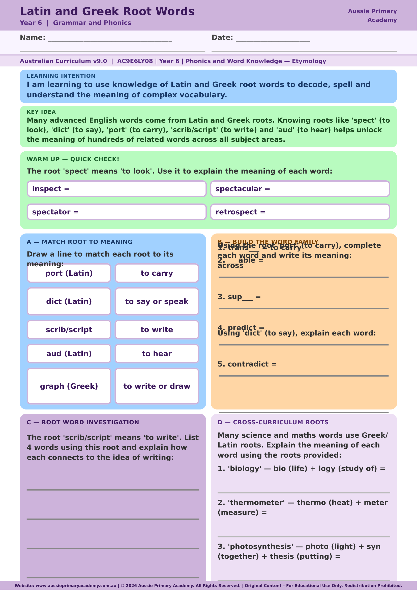

Year 6 · English · Free Printable
Latin and Greek Root Words
Use Latin and Greek roots to analyse word origins and determine unfamiliar word meanings.
Worksheet Preview

Learning Intention
Students use knowledge of Latin and Greek roots to work out unfamiliar word meanings.
Australian Curriculum
Supports Year 6 English learning. (AC9E6LY08)
Teacher Notes
Build a class root-word wall that grows throughout the term.
Skills Practised
- Vocabulary building
- Word origin analysis
- Morphological awareness
About This Worksheet
This Year 6 English worksheet helps students investigate Latin and Greek roots that appear in many English words. Understanding common roots can help students work out the meaning and spelling of unfamiliar vocabulary and recognise relationships between related words.
What Students Practise
- Identifying common Latin and Greek roots.
- Connecting roots with word meanings.
- Using word parts to investigate unfamiliar vocabulary.
- Building precise academic and subject-specific vocabulary.
How to Use It
Read each root and discuss its meaning before students tackle the examples. Encourage them to highlight the root inside a longer word and predict the word's meaning. For example, a root connected with “write” can help students make connections between related words such as describe and manuscript.
Teacher Tip
Turn this into a vocabulary routine: introduce one root, collect several related words, discuss what the root contributes, then ask students to use a new word in a sentence.